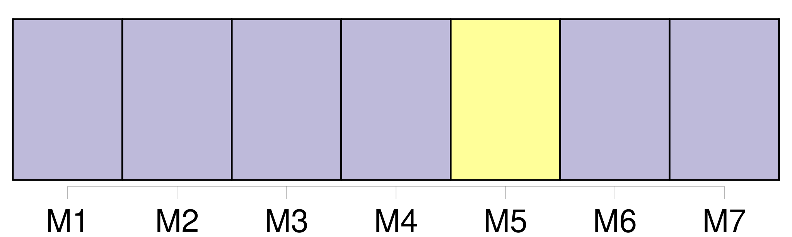
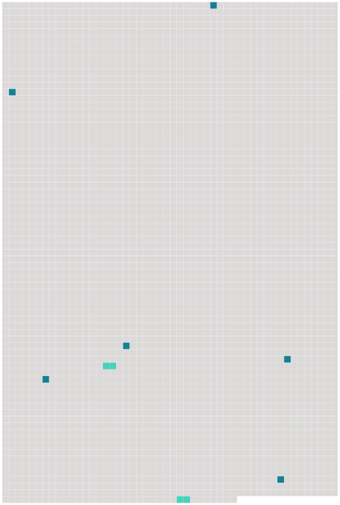

Longueur nb maillons : 8 mentions |
 |
Zèbre [21 phrases]
77 Les spécialistes pensent généralement, en observant 78 les rayures partielles du Quagga et en tenant compte de 79 la pigmentation nécessaire aux animaux pour survivre sous 81 le soleil d' [Afrique] , que les zèbres étaient originellement 80 des animaux pigmentés de noir et que les raies se forment par 83 inhibition de 84 la production de 85 mélanine. [52 phrases]
C'est à ce moment -là qu'ils se répandirent en Asie, en [Afrique] et en Europe, passant par 334 le détroit de 340 Béring, alors recouvert de 341 glace épaisse. [2 phrases] Au Pléistocène, 352 348 Equus sivalenis ( 349 Chine ) et 350 Equus sellardsi ( 351 Amérique du Nord ) ressemblaient au quagga, ce zèbre d' [Afrique] qui s'est éteint 353 au XIXe siècle. À 354 la même époque, celui qui occupait 355 le Sud de [l'Afrique] est Equus pilicatus, ancêtre direct du zèbre de Grévy. [2 phrases]
Il existe sept principales espèces équines, dont 363 la plupart sont très proches de 364 l'extinction : les trois zèbres d' [Afrique] et leurs cousins, l'âne sauvage ; 365 le cheval sauvage de 366 Mongolie ; les deux ânes sauvages d'Asie, 368 le kiang et 369 l'hémione. [20 phrases]
463 Proverbes [2 phrases]
Le Zèbre de Grévy est aussi 482 le symbole de [l'Afrique] et de 488 la faune africaine. |
 |
Il est possible de télécharger la ressource sur la page Ortolang |
Si vous avez des questions ou vous voyez des erreurs, merci d'envoyer un mail à silvia.federzoni89@gmail.com |